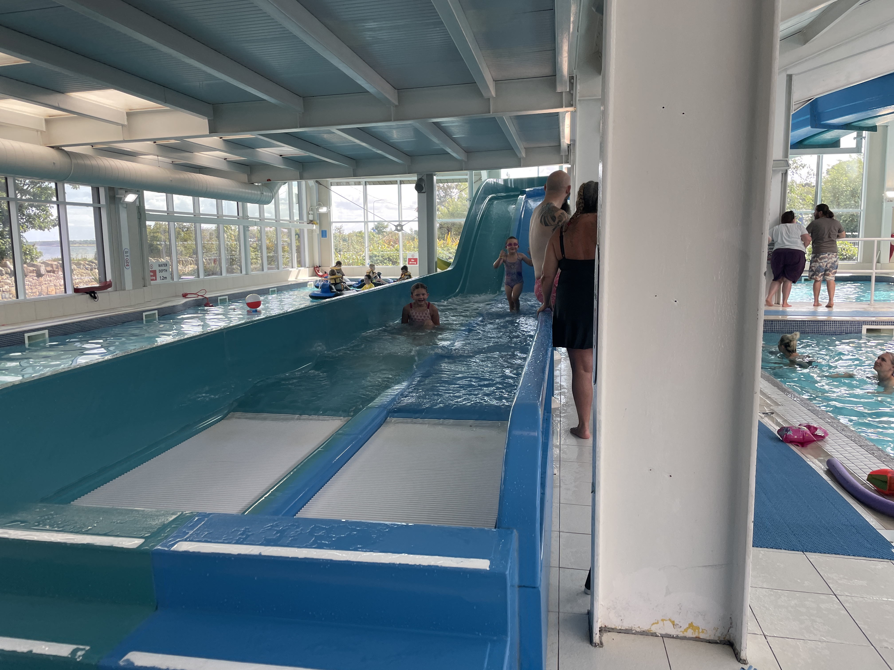
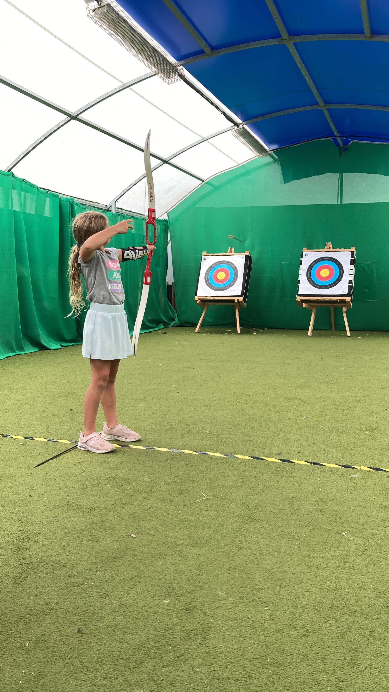
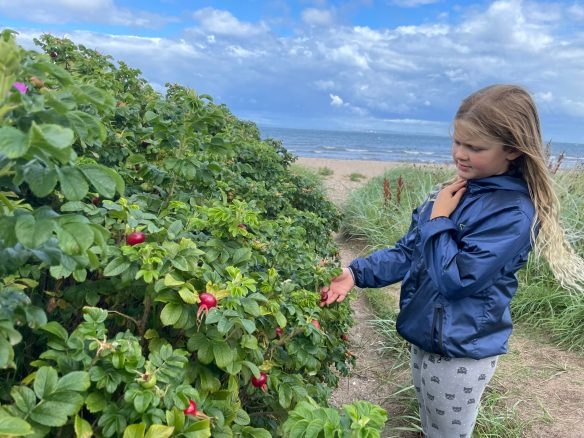
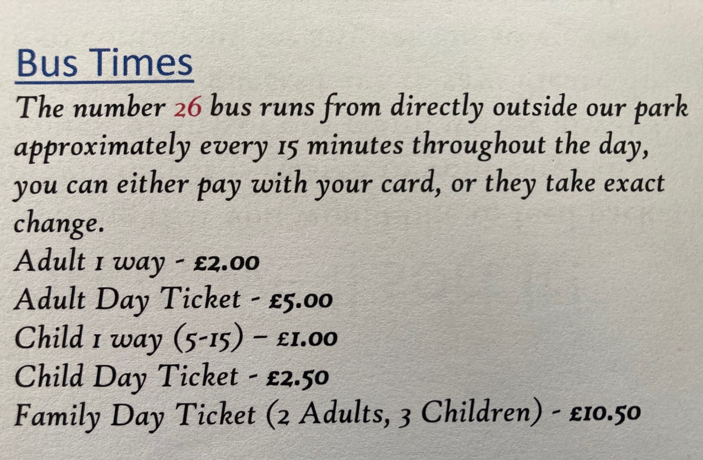
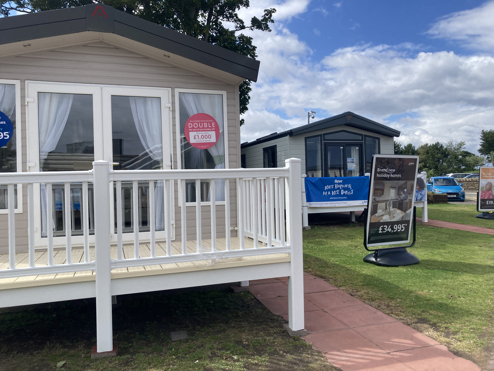
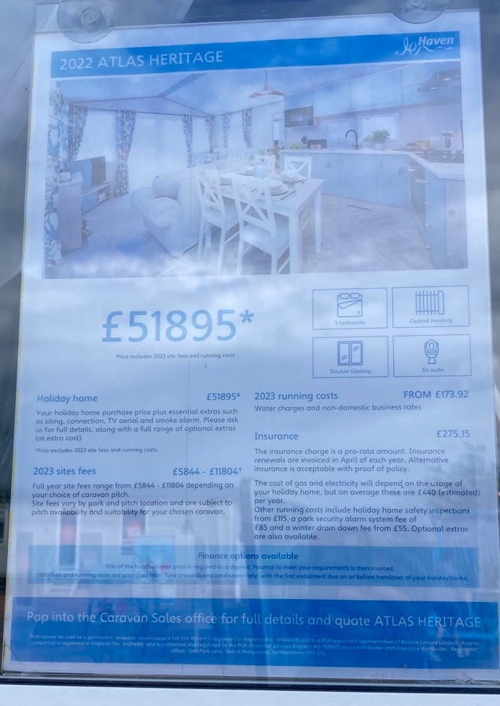
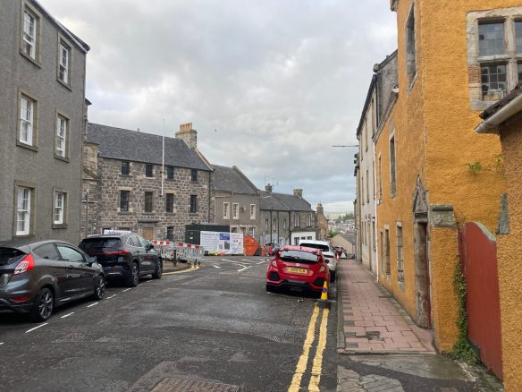
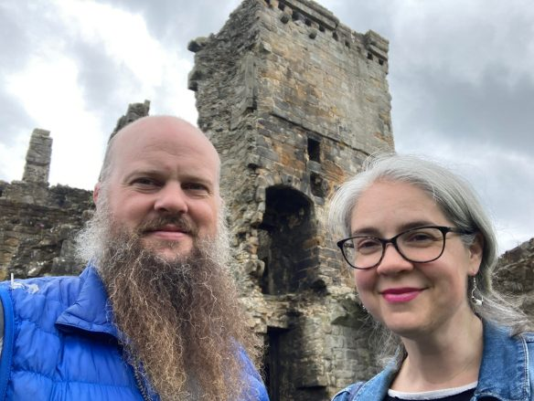

Seton Sands Holiday Park
Becky and I decided to extend our time in Scotland and use that time at Seton Sands Holiday Park. It is an interesting place, from business model to target clients. Becky and I had three goals all of which were met:
- We needed to make a quick decision for a place to go with preference for Scotland over England. We had eurail ticked and could go anywhere there was a train station.
- We have kids ages 3 and 7. Most of the places in the highlands that were interesting to us had explicit “no kids” policies—what is it about the culture here that excludes children from most places?
- From a young person perspective we needed interesting things to do and learn about.
Seton Sands was our choice. We knew very little about it so we gave it a go. It had a pool, playground, an walkable beach, and archery. We did it all.





Without a car our range to engage with the surrounding community was curtailed. The bus is not cost prohibitive, I just didn’t find out about it till late. (We did take the bus to the Edinburgh Waverley station for only 5£ which was a great price for 4 people.)

Bus schedule.
Therefore a significant amount of people watching ensued. How people engage with their environment is beautifully amusing. How did such a place come into existence? And what is the life of people like who find the seton sands value proposition satisfying?
From a US perspective Seton Sands is a 400-500 place trailer park. Here they call them static caravans. That is they think of them as closer to fifth-wheels or camper-vans than homes. This makes me suspect that there are significant tax advantages to running a “resort” this way. It is as if they can do without building permanent infrastructure or land improvements. The trailers are made from the finest grade aluminum and plastic that investment dollars can buy. No doubt it is an interesting entrepreneurial solution to a gap in the prevailing tax code. I’m concerned with the longevity and long term sustainability of the business model. That is, these materials in the USA have a life expectancy between 15-20 years. So what kind of profit margin allows for this many trailers to be refurbished that often? If the long term business plan is to build a more permanent structure at some future time then why are they selling timeshares and full trailers?


It seems then that the “public” is a victim of a profiteering scheme under the auspices of the offer of a holiday service and hospitality industry. Then the same “public” will later be straddled with managing these homes (or trailers) via the garbage disposal process in 25 years. In my childhood many of these types of structures were used as primary housing facilities in the region my mom was from. Families were of unmotivated to spend the money to remove the structures from the property and let them rot in place for an additional 30 years. It is just now that some more permanent structures are being built in that area and some of the older trailers are being moved to landfill locations. When we look at the rest of Scotland there are building going back centuries.


In my view there is something grounding and calming about homes and furnishings made from natural fibers, wood, metal, and stone. In a way these materials connect Scotland (and its peoples) to its heritage and projects Scotland’s capacity to thrive into the land’s future.With regards to the service that Seton Sands offers, I have mixed impressions.
We arrived early to check-in knowing that there was no early check-in but the cleaners were still hard at work an hour after checking time. When we did get in there were crumbs on the floor, and counter, a broken hanger in one of the closets, a dripping heater in one of the bathrooms, and some left-behind articles in one of the foot rests. Then the key we were left for our place didn’t fit our lock and we had to get that sorted as well.
As a parent I have found that my attitude is often reflected back to me via my kids. So we did the best we could with these issues and moved on quietly as possible. It has been our experience as AirBnB hosts that that the people hired to be cleaners are doing honest work, it is just that the type of people filling these roles generally aren’t the most detail oriented. The overall condition of our place was clean and comfortable.
As international travelers we didn’t have access to UK mobile networks at reasonable rates and therefore relied on Wi-Fi at the guests services building and the local grocery store. We bought a local SIM card for the network 3. Reception was 3 bars of 3G or one bar of 4G. To make matters worse setup process involves an app. Their app only accepts credit card payments from cards with a registered address in the UK. We got around this by transferring a payment via the service Ding.com.
From an US perspective the minimart was well stocked for a campground store and reasonably priced. It was branded by a local grocery chain and therefore carried familiar products beyond the typical “holiday” opportunistic purchase snacks.
The Haven staff were all polite and friendly. Even if they had never encountered a credit card that required a signature or a declined credit card because the issuer doesn’t allow the holder to declare that they are leaving the country or going on a trip (sorry USAA you used to be the best).
The fellow guests and target audience of the haven is interesting. Maybe it is Scottish people, but it might be the people who visit the haven. It seems that everyone smokes or vapes. COVID was not too long ago. And social medical conditions common to industrial nations such as diabetes and cancer are common. It is amazing how many people pretend they are locomotives with their vaping devices. The smoke/vape is crazy. Just waking behind these people I feel trapped. And then to know that all of this vape was either in their lungs or mouth. The public consciousness and/or concern for others is a bit of a cross-cultural cognitive hurdle. Would the haven loose customers if they banned smoking from their premises? I went down to the main building with the Restaurant and people line the doorway to smoke. Then the Restaurant plays loud music inside the facility. I was looking for a quiet place to write and work for an hour or so. Towards the back of the restaurant is an outdoor patio. To my disappointment it was reserved for smoking.
My final hope is that the wasp nest in the roof of the building outside the front door of the arcade is taken care of before someone is stung.
With regards to people watching, it was interesting to see the kind of inter-body touching, (hand holding, kids and parents, hitting, etc.) expressed. It was also interesting to watch the speech dynamic and learn the local understanding of “shouting”. That is, shouting is the name of a speech register. In our US based context shouting and yelling are collapsed in meaning and just mean loud voice. It was then interesting to see how dads discipline their kids. One kid I saw was scolded with strong swearing words. Another 7 year old who had acted out was picked up and carried off for scolding. Discipline actions were received in different ways. The kid who had acted out continued to be obstinate, while the kid scolded with strong swearing amended his ways. What tools do parents have really? Gentle yet effective parenting seems to be as rare as well prepared organic meals. It is amazing how many kids here consume candies. Both kids and parents seem to think it “normal”.
Categories:
Katja Patersonová
Musician
I speak Enlish and French. I have played violin since January 2023, and piano since June 2024. My favorite swim strokes are Butterfly and freestyle, but I also manage with backstroke.